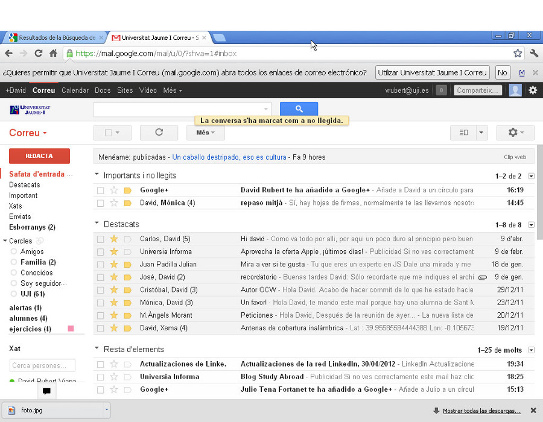
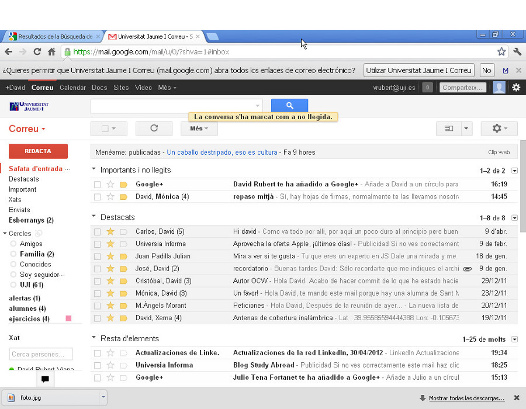
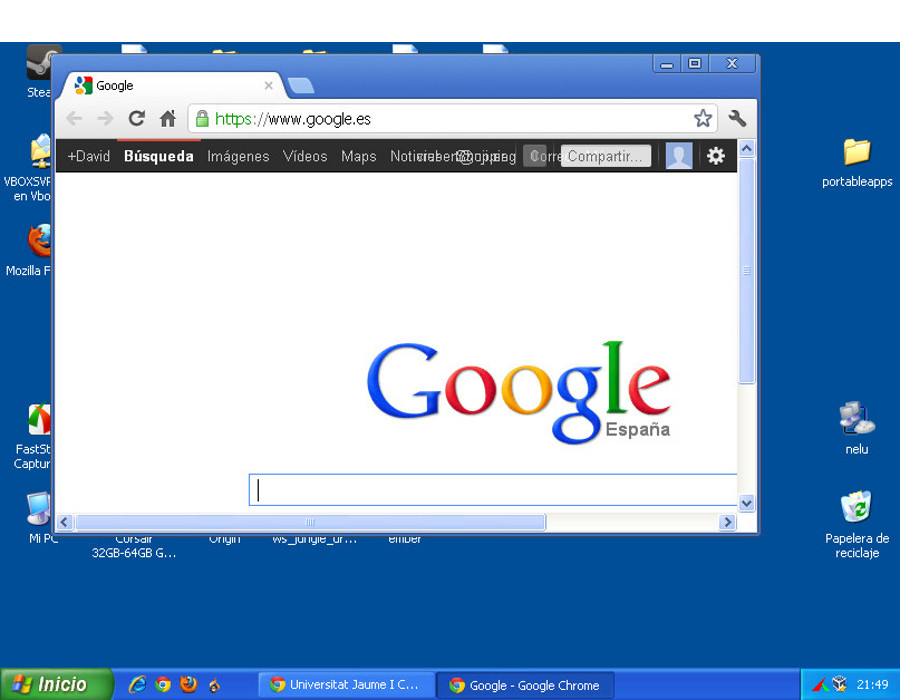
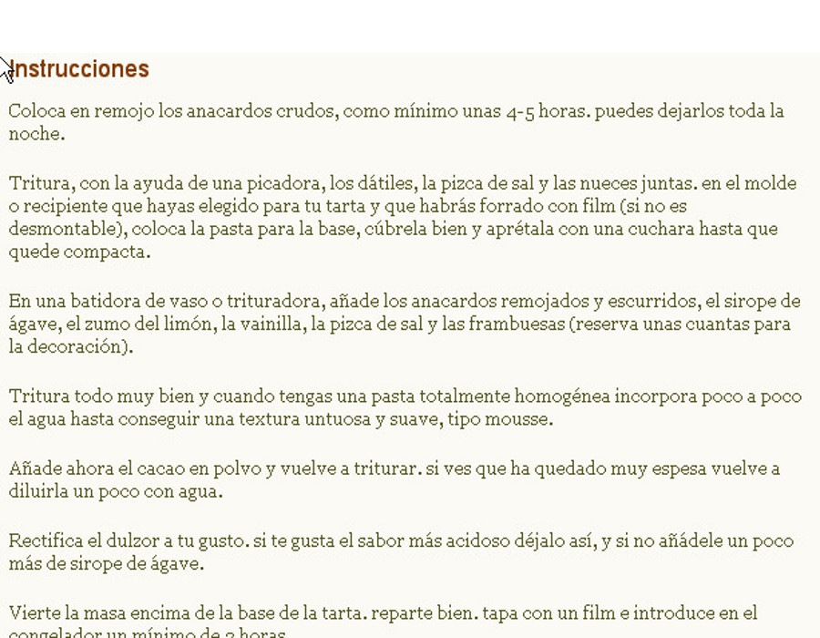
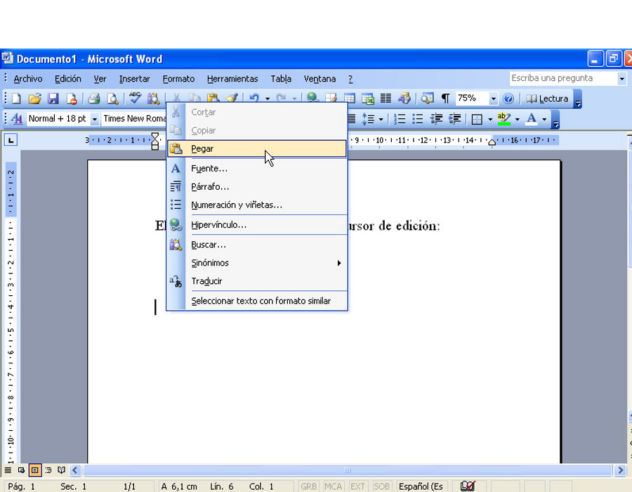
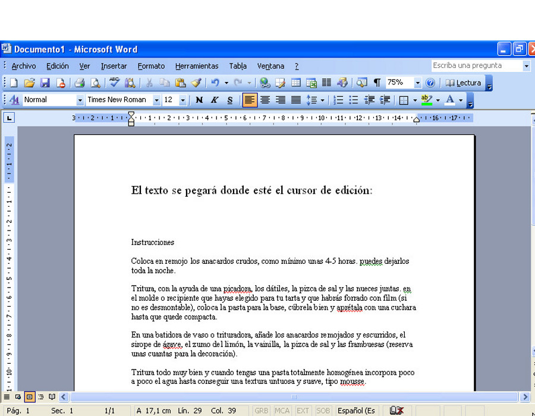
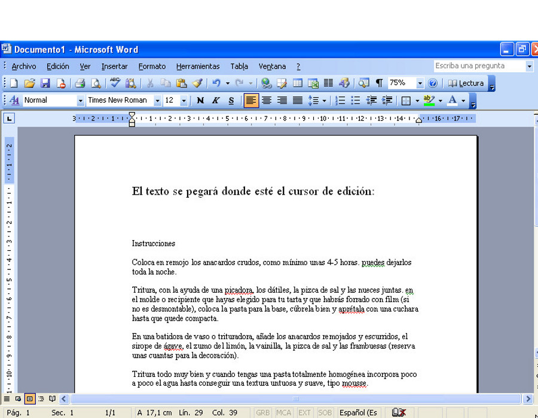
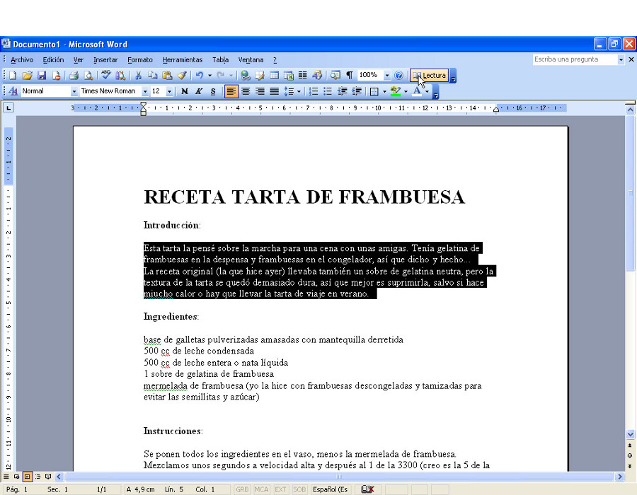

Universitat per a Majors
Repaso
Ejercicio práctico
Apreta la tecla → para avanzar.
Repaso nivel medio
Objetivo. Reforzar aquellas materias vistas en las clases de teoría en las que os hayan quedado más dudas.
Según me cuentan, hasta ahora habéis visto:
- Gmail. Correo electrónico y adjuntos.
- Descarga de documentos. Bajar imágenes de la web y guardarlas en una carpeta.
- Edición de textos. Crear un documento con Word y darle formato.
La clase de hoy
La clase de hoy os propongo que realicemos un
ejercicio práctico que incluya varias temáticas.
Ejercicio práctico
El ejercicio consiste en buscar por Google la mejor receta de tarta
de frambuesa que podamos encontrar. Copiar, pegar y formatear el texto en un nuevo documento de Word, y buscar, descargar e incrustar en el documento una imagen de la tarta. Una vez creado el documento, guardarlo, y enviarlo por correo.
Descomponiendo el ejercicio
- Apertura de aplicaciones. Un navegador
y un editor de textos.
- Barra de tareas.
- Buscar información en la web.
- Copiar y pegar.
- Descargar una imagen. Desde internet a una
carpeta del disco duro.
- Formatear texto en Word.
- Guardar un nuevo documento en una carpeta.
- Enviar un adjunto por correo electrónico.
 

Cambia de foto con las teclas: ↑ y ↓
Apertura de aplicaciones
EJERCICIO. Abre un navegador (Chrome, Firefox, o
Internet Explorer), y el Microsoft Word.
DETALLES
- Barra de acceso rápido. Los navegadores están
en la barra de acceso rápido ya que son de las aplicaciones más
accedidas.
- Menu Inicio > Todos los programas. Hay que
buscar entre las categorías hasta encontrar el programa que que
queremos abrir.


Cambia de foto con las teclas: ↑ y ↓
Barra de tareas
Multitarea. El ordenador es capaz de hacer
funcionar varios programas al mismo tiempo. La barra de tareas nos
ayuda a organizarlos
DETALLES
- Cada programa un recuadro. Por cada programa
que tengamos abierto veremos un recuadro en la barra de
tareas.
- Fácil intercambio. Podemos cambiar fácilmente
entre aplicaciones abiertas pulsando sobre el recuadro
correspondiente de la aplicación, que identificamos por
Icono y Título.
Cambia de foto con las teclas: ↑ y ↓
Buscar información en la web
Dos formas de buscar información en la web.
- Conocer previamente la web que posee la
información. Si ya conocemos la web, podemos visitarla
directamente introduciendo su dirección en la barra de
direcciones.
- Utilizar un buscador. Si no conocemos ninguna
web que nos proporcione la información, podemos utilizar un
buscador como Google.

Cambia de foto con las teclas: ↑ y ↓
Copiar y pegar
Es una técnica básica de la informática que ya conocéis. Nos sirve
para trasladar texto de un documento a otro.
DETALLES
- Botón izquierdo del ratón para seleccionar.
- Pulsar/Arrastrar/Soltar.
- Botón derecho del ratón para elegir operación.
- El texto se pegará allí donde esté situado el cursor de
edición.


 

Cambia de foto con las teclas: ↑ y ↓
Descargar una imagen
Igual que buscamos información escrita en la web, podemos buscar
información multimedia, como imágenes.
DETALLES
- Podemos utilizar un portal de fotos, como Flickr.
- O podemos buscar con Google.
- No podemos absorver la imagen con copiar/pegar, debemos
descargarla al disco.
Cambia de foto con las teclas: ↑ y ↓
Formatear texto en Word
Las sesiones anteriores visteis cómo dar un poco de formato a los
textos en el editor Word.
DETALLES
- Formato de texto. Negrita, subrayado, fuente, tamaño
de fuente, color, etc.
- Formato de párrafo. Alineación (centro, izq.,
justificado), interlineado, etc.
- Formato de imagen.


Cambia de foto con las teclas: ↑ y ↓
Guardar documentos en carpetas

Una vez terminado el documento, si queremos poder enviarlo, o volver
a trabajar con él en otra sesión, deberemos guardarlo en una carpeta
del disco.
DETALLES
- Formato de texto. Negrita, subrayado, fuente, tamaño
de fuente, color, etc.
- Formato de párrafo. Alineación (centro, izq.,
justificado), interlineado, etc.
- Formato de imagen.
Cambia de foto con las teclas: ↑ y ↓
Enviar correos con adjuntos

Cambia de foto con las teclas: ↑ y ↓